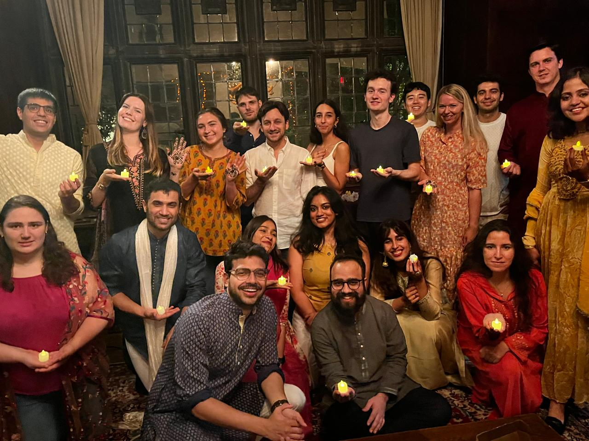
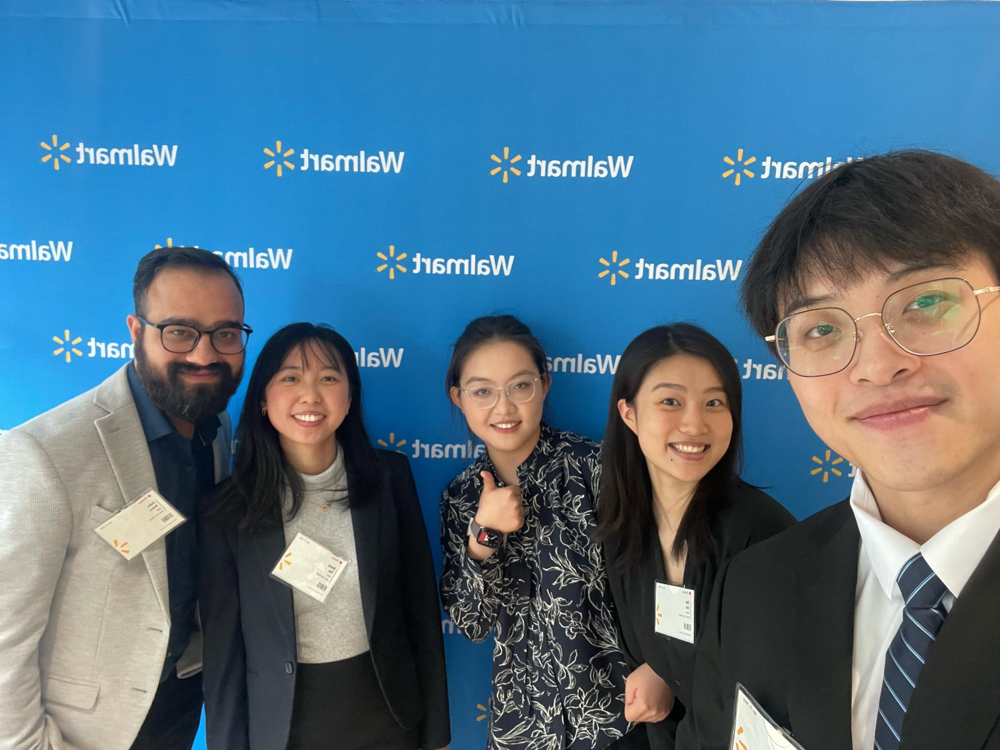
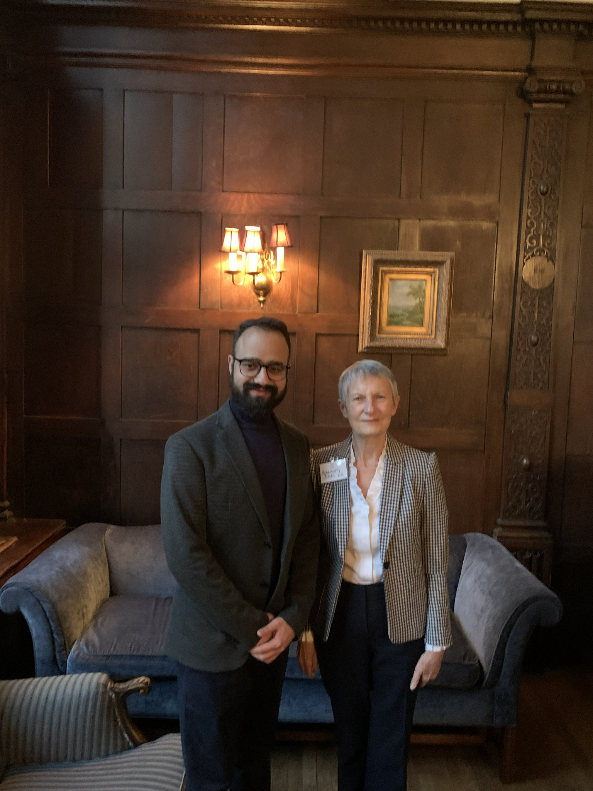

STORIES & EXPERIENCE
The people and places
behind the work.
BridgeMinds Lab is informed by experience across international academic communities, professional networks and cross-cultural environments.




“
We would rather share
real experiences.
As BML grows, this space can become a collection of student journeys, reflections and outcomes — shared with permission and without manufactured testimonials.
✦
OUR COMMITMENT
Independent guidance.
Your interests first.
BridgeMinds Lab does not receive university commissions for student admissions. Our recommendations are based on your profile, goals and fit, not on commission incentives.
YOUR JOURNEY STARTS HERE